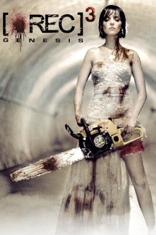
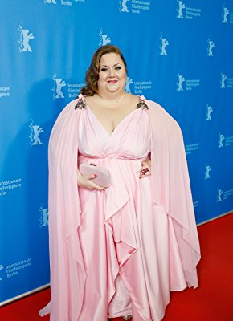

#2565 REC 3: Genesis
 
 IMDB-Wertung: 5.0 / 10
IMDB-Wertung: 5.0 / 10  Metascore: 45
Metascore: 45 
Clara und Koldo feiern den schönsten Tag ihres Lebens: ihre Hochzeit! Das ändert sich aber schnell, als einer der Gäste Zeichen einer seltsamen Krankheit aufweist und beginnt Blut zu spucken. Als andere Besucher sich rasend schnell anstecken und auf die anderen losgehen bricht die Hölle aus: Die gemütliche Festivität wird zum hysterischen Schlachtfest, in der sich die Hochzeitsgesellschaft in einem Kampf um Leben und Tod wiederfindet. Clara und Koldo müssen so schnell wie möglich entkommen - und wie lässt sich das Killer-Virus stoppen?
Jahr: 2012
Dauer: 80 Minuten
FSK: 18
Land: Spanien Studio: UFATonspuren:
Untertitel: Deutsch,
Auflösung: 1080p (1920x816) Größe: 4014 MB
Genre: Horror, Liebe
Regisseur: Paco Plaza
Drehbuch: Luiso Berdejo, Paco Plaza, Luiso Berdejo, Paco Plaza, David Gallart
Soundtrack: Mikel Salas
Darsteller:
- Leticia Dolera als Clara
 Javier Botet als Niña Medeiros
Javier Botet als Niña Medeiros- Carla Nieto als Rebeca Viñas
- Mireia Ros als Menchu
- Charlotte Vega als
- Diego Martín als Koldo
- Ismael Martínez als Rafa
- Àlex Monner als Adrián
- Borja Glez. Santaolalla als Atún
- Emilio Mencheta als Tío Pepe Víctor
- David Ramírez als Canon
- Miguel Ángel González als John Esponja
- Ramón Agirre als Danilo
- Xavier Ruano als Cura
- José de la Cruz als Abuelo Matias
- Antonio Barroso als Pequeñin
- Toni Sans als Jumanji
- Aitor Legardón als Amigo Fiestero
- Paco Moreno als Charly
- Claire Baschet als Natalie
- Jana Soler als Tita
-  Itziar Castro als Señora con Pamela
- Blai Llopis als Padre Clara
- Fet Bamund als Padre Koldo
- Rosa Chevalier als Tia Amparo
- Santi Sans als Tío Arturo
- Ana Isabel Velásquez als Wendy
- Carme Contreras als Amelia
- Miguel Ángel Alarcón als Zombie
- José Javier Domínguez als Camarero
- Isabel Llanos als Invitada boda
- Jose Mellinas als Zombie
Datei: X:\FSK18-Collections\REC\REC 3 Genesis (2012, FSK18, 1920x816).mkv seit 23.11.2015
Festplatte: FSK18
 Es gibt insgesamt 7 Filme in der Gruppe 'FSK18-Collections\REC'
Es gibt insgesamt 7 Filme in der Gruppe 'FSK18-Collections\REC'